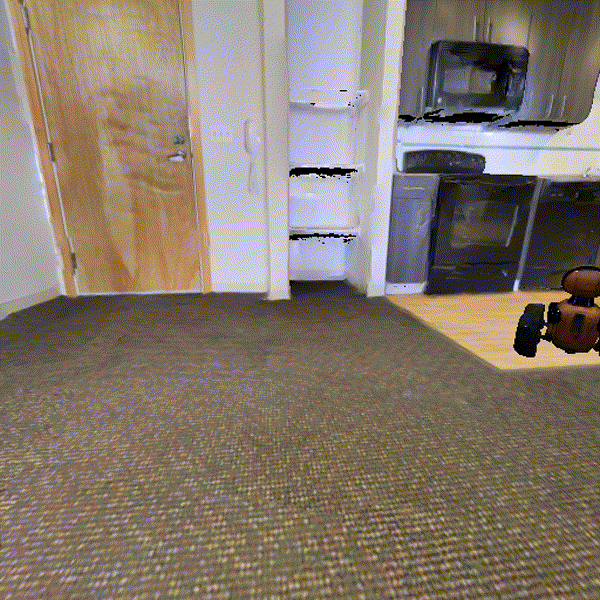

Current 3D mapping pipelines generally assume static environments, which limits their ability to accurately capture and reconstruct moving objects. To address this limitation, we introduce the novel task of active mapping of moving objects, in which a mapping agent must plan its trajectory while compensating for the object's motion. Our approach, Paparazzo, provides a learning-free solution that robustly predicts the target's trajectory and identifies the most informative viewpoints from which to observe it, to plan its own path. We also contribute a comprehensive benchmark designed for this new task. Through extensive experiments, we show that Paparazzo significantly improves 3D reconstruction completeness and accuracy compared to several strong baselines, marking an important step toward dynamic scene understanding.
Paparazzo is a learning-free framework for active 3D reconstruction of dynamic objects. Paparazzo considers a set of viewpoints distributed in a foveal configuration around the target object and moving with it over time. To select the most informative viewpoints, we rely on Fisher Information computed from a 3D Gaussian Splatting model, while, to predict the object trajectory and the future positions of these viewpoints, we leverage an Extended Kalman Filter.

We rely on an Extended Kalman Filter (EKF) defined on \( SE(3) \) to estimate the object state and its uncertainty. We assume a constant-velocity motion model, so the object state is composed of the object pose and its linear and angular velocities. We quantify our confidence about the object state with two complementary metrics. The first metric, \( U_k = \mathrm{tr}(P_k) \), directly measures the state uncertainty; the second metric is the Normalized Innovation Squared (NIS), which quantifies the consistency of a new measurement of the target object pose with the current state estimate. We use these metrics to determine wether the EKF is providing reliable estimates, and to switch between two different modes of operation for the agent: Object Tracking Mode and Object Mapping Mode.

When the EKF is not reliable, Paparazzo transitions to the Object Tracking Mode to re-localize the object and stabilize the EKF. The goal of this mode is to prioritize frequent observations of the target object in order to refine motion estimates. To this end, the agent actively keeps the object within the camera’s field of view while continuously updating its reconstruction and motion estimate. At each time step, the agent rotates to move the segmentation mask toward the image center, and translates to adjust its distance to the object so that the object's apparent size remains above a certain threshold.


When the EKF stabilizes, Paparazzo transitions to the Object Mapping Mode.
The goal of this mode is to move the agent to poses that will significantly improve its reconstruction of the object, while taking into account the object motion as predicted by the EKF.
Paparazzo samples candidate viewpoints \( \mathcal{V} \) relative to the object reference frame, so that they move together with it. The camera centers corresponding to these viewpoints are distributed around the object in a foveated configuration, and the cameras point toward the object.
Then Paparazzo trades off between (i) the informativeness of a viewpoint and (ii) the temporal synchronization between the agent and the moving object. To quantify this trade-off, we introduce the following criterion:
\[
B(\mathbf{x}, i) = -w_{\text{eig}} \,\mathrm{EIG}(\mathbf{x}) + w_{\text{sync}} \, C_{\text{sync}}(\mathbf{x}, i)
\]
where \( \mathrm{EIG}(\mathbf{x}) \) is the FisherRF informativeness associated with the candidate viewpoint \( \mathbf{x} \in \mathcal{V} \),
and \( C_{\text{sync}}(\mathbf{x}, i) \) is a criterion we introduce to measure how well the agent can synchronize with the motion predicted for the object when attempting to observe the object from viewpoint \( \mathbf{x} \).

To evaluate our Paparazzo method, we introduce a dedicated benchmark and evaluation protocol designed to assess both reconstruction fidelity and spatial coverage over time. Experiments are conducted within Habitat 3.0, a high-performance 3D simulator that provides realistic indoor environments and robot displacements. We selected six photorealistic indoor scenes, three from the Matterport3D dataset (M) and three from the Gibson dataset (G), commonly used for static active mapping. To extend these static scenes to dynamic scenarios, we introduce a synthetic moving target object into each environment.
To comprehensively assess reconstruction performance under diverse object motion dynamics, we consider four motion patterns for the target:
We compare Paparazzo against three baselines designed to isolate the contributions of viewpoint selection, motion prediction, and temporal feasibility:

@article{allegro2026paparazzo,
title={Paparazzo: Active Mapping of Moving 3D Objects},
author={Allegro, Davide and Li, Shiyao and Ghidoni, Stefano and Lepetit, Vincent},
journal={arXiv preprint arXiv:2604.19556},
year={2026}
}